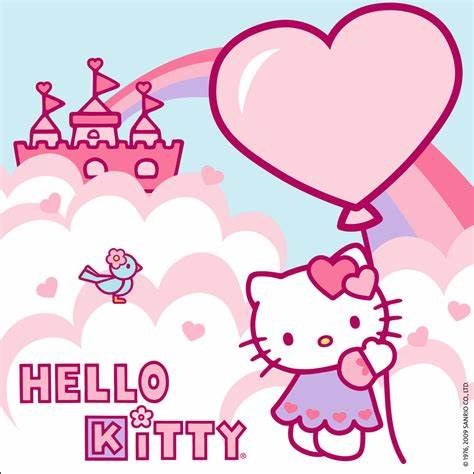
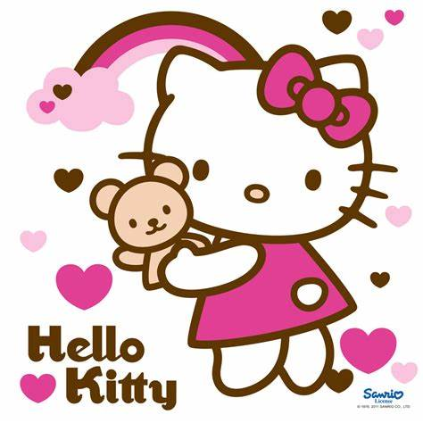
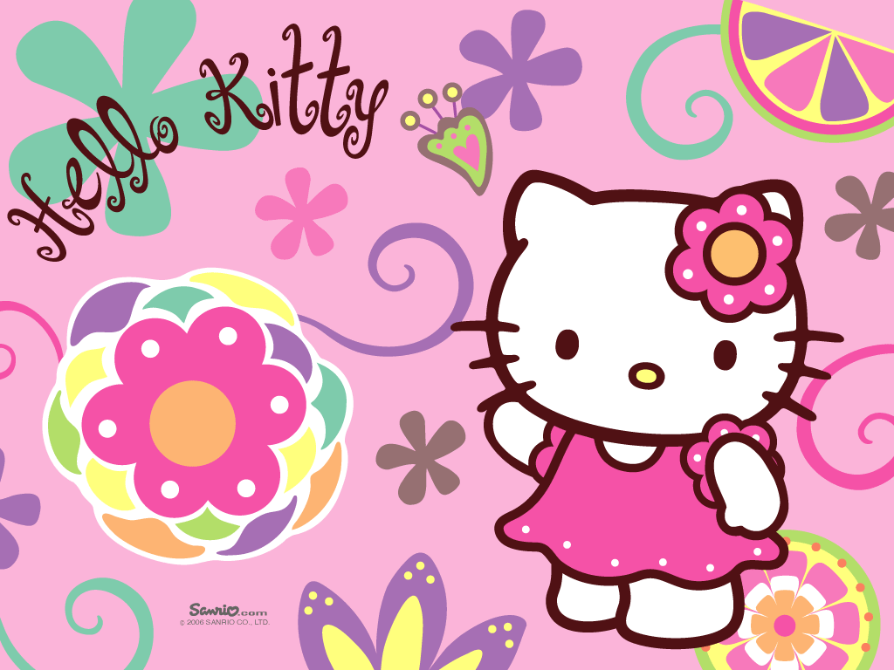
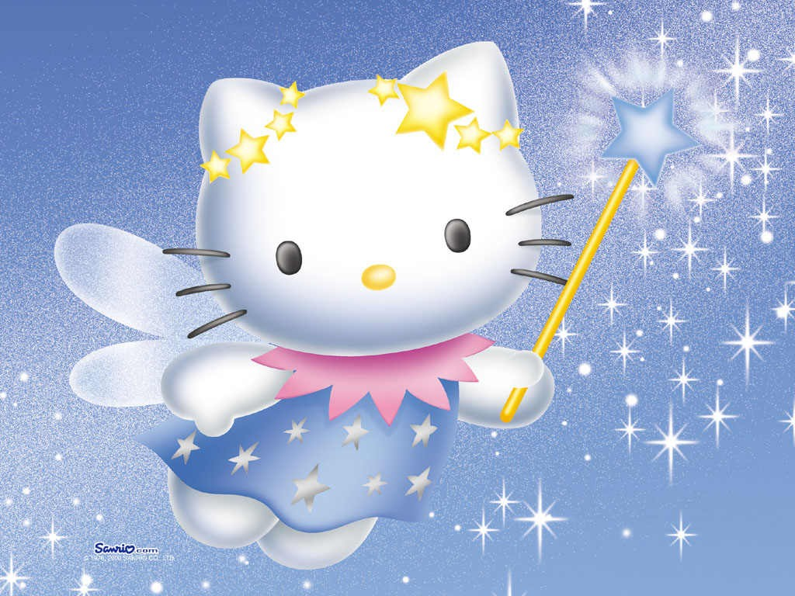
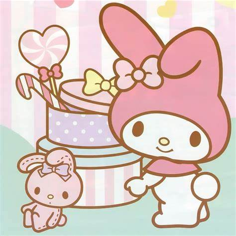
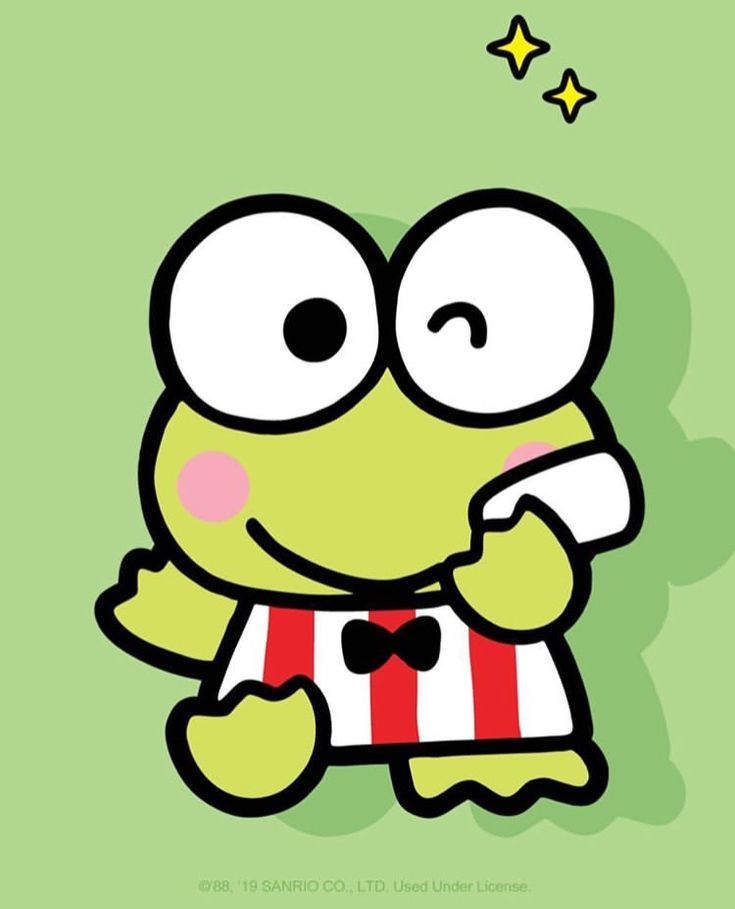
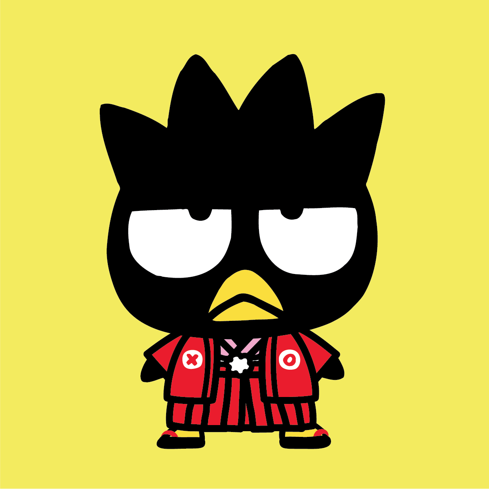
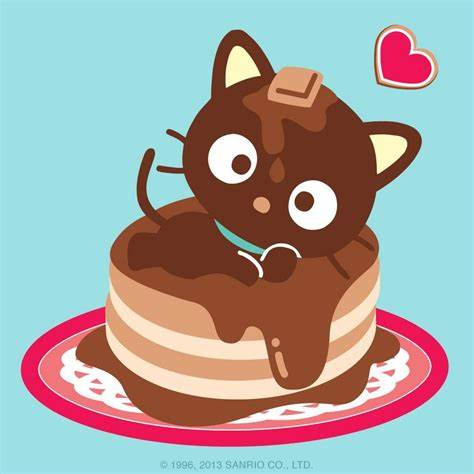
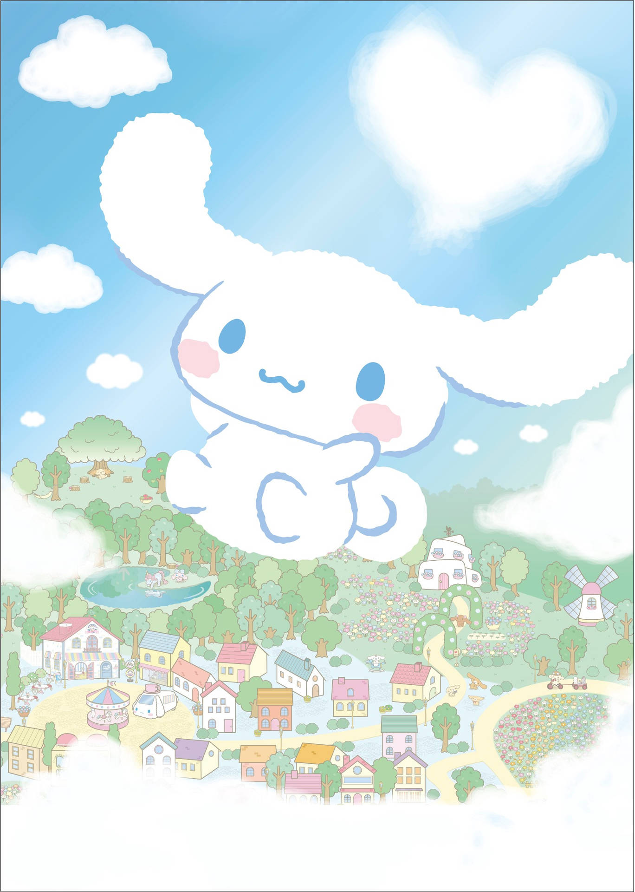
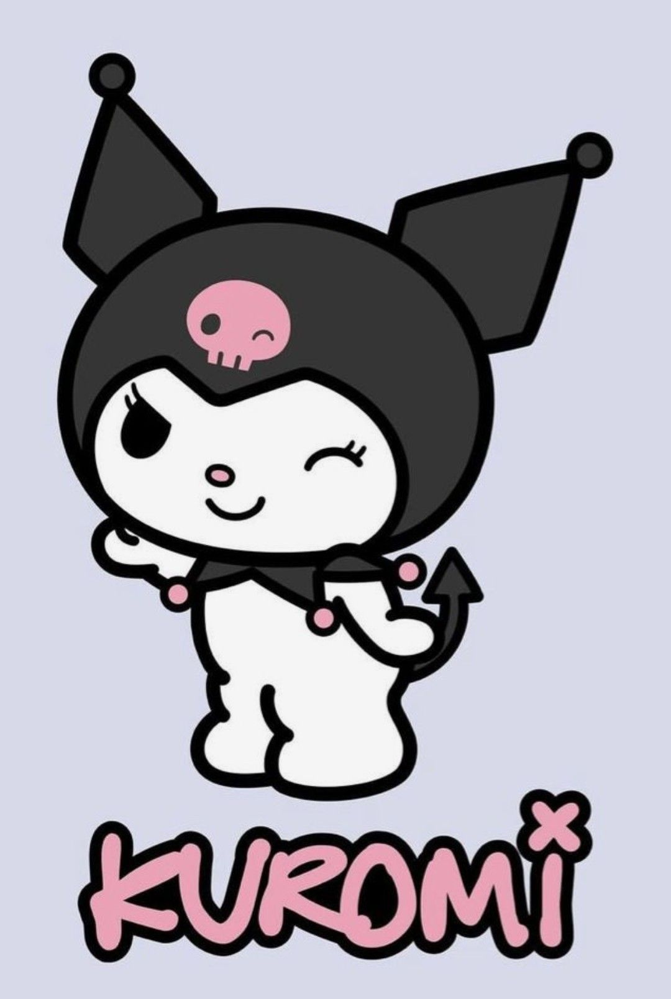

Hello Kitty, cuyo nombre completo es Kitty White, es un personaje ficticio creado por la compañía japonesa Sanrio en 1974. Es una pequeña gata antropomórfica de color blanco con un distintivo lazo rojo en su oreja izquierda. Hello Kitty vive en Londres con su familia, incluyendo a sus padres George y Mary, y su hermana gemela Mimmy.
   
Es dulce, inocente y muy amigable. Siempre dispuesta a ayudar a sus amigos.
Es muy enérgico, alegre y siempre está dispuesto a embarcarse en nuevas aventuras.
Es travieso, sarcástico y a veces un poco egoísta, pero tiene buen corazón.
Es curioso, inteligente y siempre está al tanto de lo que sucede gracias a sus "antenas" sensibles.
Es muy tierno, dulce y tímido, pero siempre está dispuesto a hacer nuevos amigos.
Es traviesa, sarcástica y tiene un lado rebelde, pero en el fondo es buena y leal a sus amigos.
